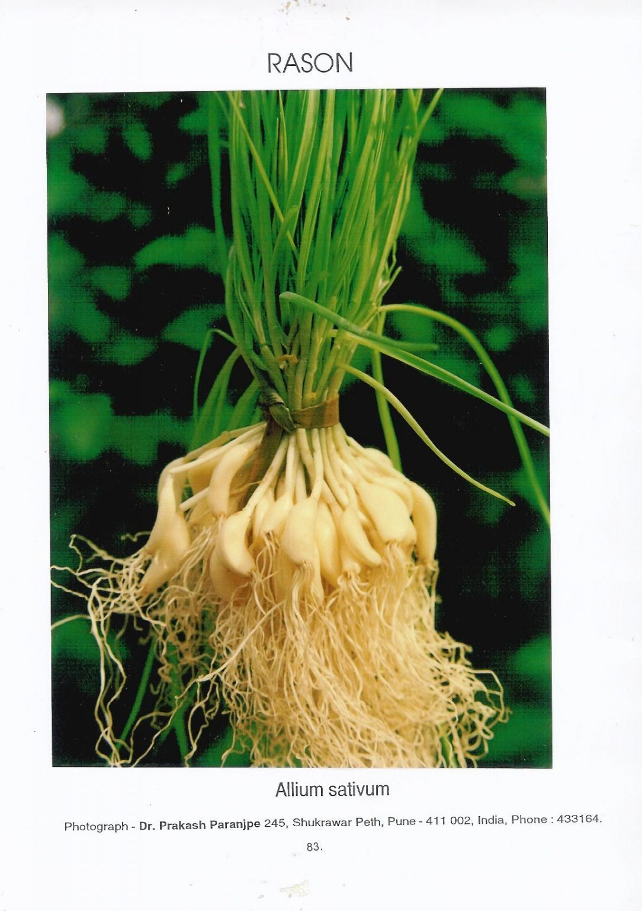

Basonym of Drug
Rasona
Main Synonym
- Ugragandha
- Yavanesya
- Lasuna
- Mahoushadha
- Malechhakanda
Regional Name
- Bengali: Rasuna
- Gujarati: Lasan
- Hindi: Lehsun
- Kannada: Bellulli
- Tamil: Vallapundu
- Marathi: Lasuna
- Telugu: Tellaligada
- English: Garlic
Botanical Name
Allium sativum Linn
Family
External Morphology
30-60 cm high bulbous herb
Useful Parts
Important Phytoconstituent
- Allin
- Thiamine
- Arginine
- Riboflavin
- Allyl Propyl
- Thioglycosides
- Prostaglandins
- Ajoene
- Proteoruboside
- Allylthiol
Rasa Panchak
- Rasa: Amla Varjita Pancharasa
- Guna: Guru, Snigdha, Tikshana
- Virya: Ushna
- Vipaka: Katu
Action
Therapeutic Indication
- Vrushya (Aphrodisiac)
- Rasayana (Rejuvenating)
- Netrya (Good for Eyes)
- Krimighna (Anti-helminthic)
- Kasaghna (Anti-cough)
- Pachana (Digestive)
- Pramehaghna (Anti-diabetic)
- Shoolahara (Pain Reliever)
Therapeutic Uses
- Kasa: Avaleha prepared with Rasona is useful to treat cough, asthma, and roughness of the voice.
- Karnashoola: Oil prepared with garlic paste is useful in earache.
- Anartava: Food preparations made from garlic are useful to treat amenorrhea.
Dose
- Paste - 3-6 gm
- Oil - 1-2 drops
Formulations
- Lashunadi Vati
- Rasona Kshirapaka
- Rasona Sura
- Rasonastaka
- Lasunadi Taila
- Lasunadi Ghrita
Adverse Effect
Contraindicated in pregnancy, metrorrhagia, bleeding disorders
Remedial Measure
Dhanyaka (Coriander) and Badam Taila (Almond Oil)
Purification
Not required